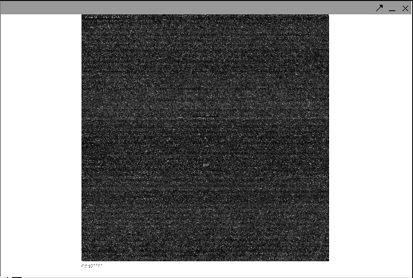

The Affymetrix CEL file contains a single intensity value calculated for each probe on the chip. It is derived from the raw image (.dat) file. Individual Affymetrix CEL files can be read into geWorkbench and are displayed in the CEL file viewer. The CEL Viewer can be used to check for obvious problems such as fingerprints or uneven drying which could affect data quality. The CEL file is not an exact image of the chip, but a reconstructed image at the probe level.
Viewing a CEL File
1. Load a .CEL file into a Project folder.
2. Navigate to the CEL File Viewer in the Visual Area of the application.
Note: The CEL file viewer component is simply a viewer, it does not permit any operations on the image.
